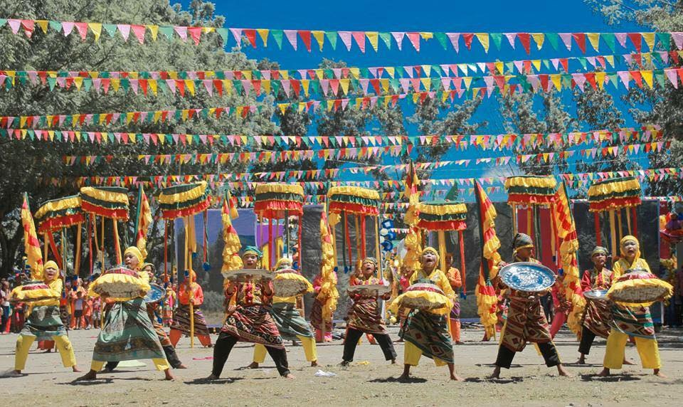
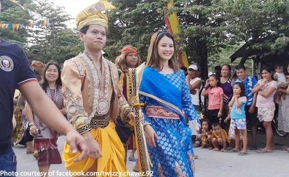
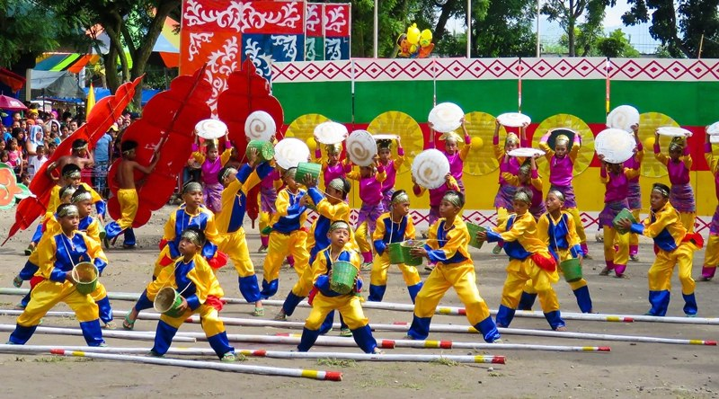
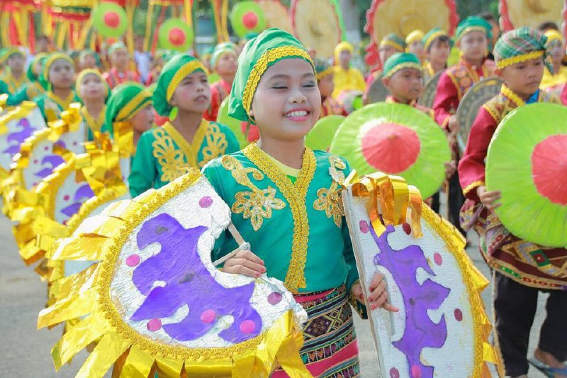

Hon. Pakung S. Mandudadatu
Hon. Pakung S. Mandudadatu, also known as Sultan . Pax Mangudadatu of the Sultanate Royal House of Rajah Buayan, is a Filipino politician who is the provincial governor of Sultan Kudarat since 2016. He also served the same post from 1998 to 2007 and was elected Representative of the 1st district of Sultan Kudarat with Tacurong under the administration's Kabalikat ng Malayang Pilipino (Kampi) party in 2007.He ran for Mayor in Lutayan, Sultan Kudarat this 2022 with his grandson, the current Mayor of Lutayan, Prince Raden Mangudadatu Sakaluran running for Vice Mayor.
Lutayan Lake
Palavilla Highlands
Kanduli Festival
 Kanduli Festival is a celebration of culture, peace, unity and is a thanksgiving showcasing the rich culture and traditions of the people of Lutayan.
Thousands of Lutayanons and visitors flocked the main streets of Lutayan as well as the Municipal Plaza on Monday, October 12 as four groups consisting of elementary pupils dressed in colorful traditional Maguindanaon attires participated in the street dancing competition.
 